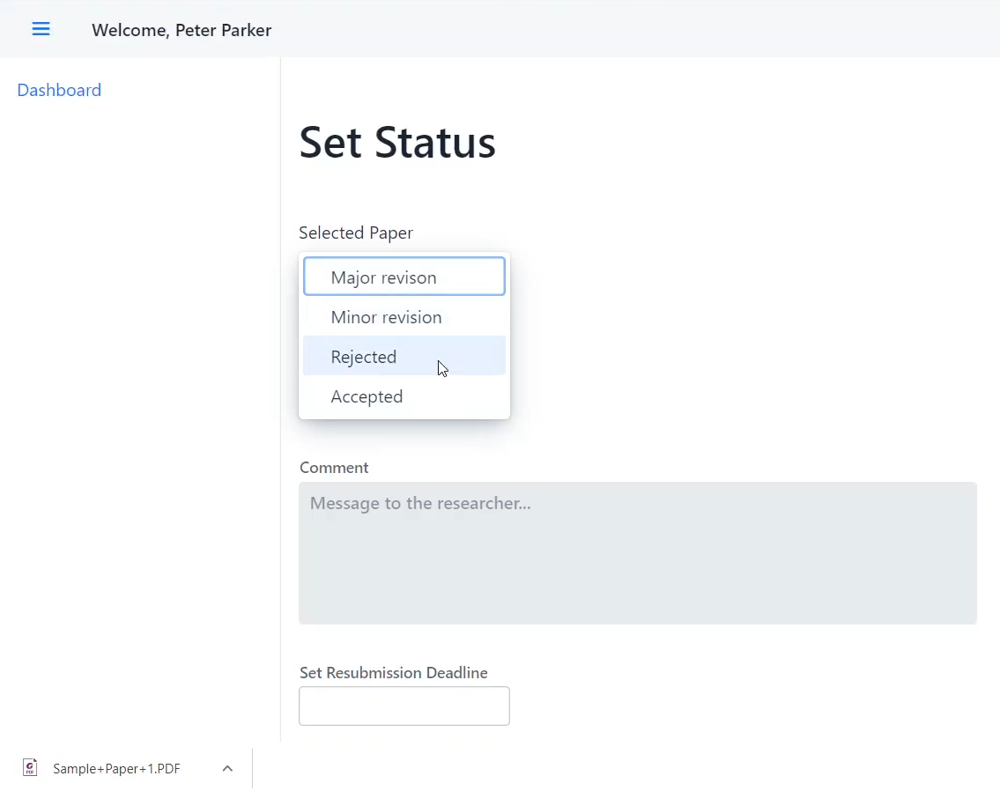

Technologies and features
This project was built to help researchers and journal writers have system to submit their papers to their editors for review and feedback. Reviewers would be able to review these submissions and use the system to easily send feedback to the writers conveniently. Editors would be able to send edits and feedback on the content of the paper.
Because our application was designed to primarily be used by universities, it was important that the application kept track of data of submission and the types of users involved with submissions. This led us to build account and login functionality, so that submissions are kept track of per user, and allow users to easily see what editors and reviewers are available and who responded on papers.
For managing of users within the system, we granted access to adminstrative controls to an assumed administrator. This administrator will have a different dashboard compared to the other users, and will be able to to manage the users of the system. (Add user, delete users, etc.) Data of users is tracked by a JSON file with all administrative properties of each user.
Researchers who are submitting their papers will see a dashboard of the papers they have submitted, and the status of their submissions once they log in. Here, they can submit new papers, or resubmit a paper if they wish. They will be able to nominate a reviewer they wish for their submission. If resubmitting, they must choose a paper that has previously been submitted.

Reviewers will be able to see papers they have been prompted to review in their dashboard once they log in. They'll be able to select the papesr, download them and then send a message back to the researcher who had submit their paper to them.
Editors will be met with a similar dashboard to the reviewer, where they can select papers to edit and give feedback to the submissions. They will also have the ability to set the status of the papers to let the researchers know if they still need to edit it or it has been finished review.
